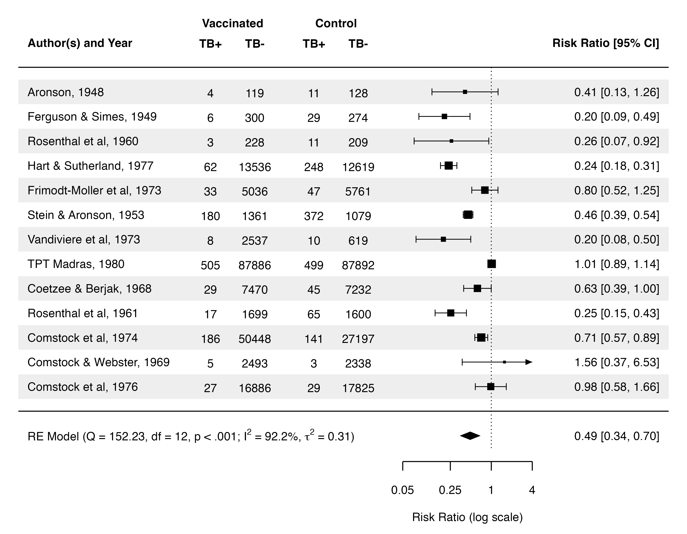

Show the R code
alim <- log(c(.05, 4)) # forest() sets the axis limits to range(at)
ticks <- log(c(.05, .25, 1, 4))
sw <- sqrt(wt)
trials <- as_tibble(dat) |>
mutate(row = k:1, # first trial at the top
label = paste(author, year, sep = ", "),
lo = yi - qnorm(.975) * sqrt(vi),
hi = yi + qnorm(.975) * sqrt(vi),
annot = sprintf("%.2f [%.2f, %.2f]", exp(yi), exp(lo), exp(hi)),
# forest()'s default point size: square root of the weight, rescaled
# linearly onto 0.5 to 1.5. See "How we know" below.
weight = wt,
psize = .5 + (sw - min(sw)) / diff(range(sw)),
shade = row %% 2 == 1)
counts <- trials |>
select(row, tpos, tneg, cpos, cneg) |>
pivot_longer(-row) |>
mutate(x = c(tpos = -9.5, tneg = -8, cpos = -6, cneg = -4.5)[name])
diamond <- tibble(x = c(res$ci.lb, res$b[1], res$ci.ub, res$b[1]),
y = -1 + c(0, .17, 0, -.17))
# One interval runs past the axis limit; forest() clips it and draws an arrow.
arrows <- trials |>
filter(hi > alim[2]) |>
reframe(x = alim[2] - c(.23, 0, .23), y = row + c(-.12, 0, .12), row = row)
re_label <- sprintf(
"plain('RE Model (Q = %.2f, df = %d, p < .001; ')*I^2*' = %.1f%%, '*tau^2*' = %.2f)'",
res$QE, k - 1, res$I2, res$tau2)
# The original sits on a grey ground (#DDDDDD) with darker stripes (#CCCCCC),
# sampled off its pixels. The ground is not part of the chart's argument, so
# ours is white; the stripes stay, one step lighter, because they help the eye
# along a row.
ink <- "black"; ground <- "white"; zebra <- "#EEEEEE"
fs <- 3.9 # text size, in mm
p_forest <- ggplot() +
geom_rect(data = filter(trials, shade),
aes(xmin = -16, xmax = 6, ymin = row - .5, ymax = row + .5),
fill = zebra) +
annotate("segment", x = -16, xend = 6, y = c(k + 1, 0), yend = c(k + 1, 0),
linewidth = .45, colour = ink) +
annotate("segment", x = 0, xend = 0, y = -1.5, yend = k + 1,
linetype = "13", linewidth = .4, colour = ink) +
# intervals, clipped to the axis, with end caps only where they are not
geom_segment(data = trials,
aes(x = pmax(lo, alim[1]), xend = pmin(hi, alim[2]), y = row, yend = row),
linewidth = .35, colour = ink) +
geom_segment(data = filter(trials, lo >= alim[1]),
aes(x = lo, xend = lo, y = row - .14, yend = row + .14),
linewidth = .35, colour = ink) +
geom_segment(data = filter(trials, hi <= alim[2]),
aes(x = hi, xend = hi, y = row - .14, yend = row + .14),
linewidth = .35, colour = ink) +
geom_polygon(data = arrows, aes(x, y, group = row), fill = ink) +
geom_point(data = trials, aes(yi, row, size = psize * 2.49),
shape = 15, stroke = 0, colour = ink) +
geom_polygon(data = diamond, aes(x, y), fill = ink) +
# the axis, drawn by hand: it spans the axis limits, not the panel
annotate("segment", x = alim[1], xend = alim[2], y = -2.05, yend = -2.05,
linewidth = .45, colour = ink) +
annotate("segment", x = ticks, xend = ticks, y = -2.05, yend = -2.42,
linewidth = .45, colour = ink) +
annotate("text", x = ticks, y = -3.2, label = c("0.05", "0.25", "1", "4"),
size = fs, colour = ink) +
annotate("text", x = mean(alim), y = -4.3, label = "Risk Ratio (log scale)",
size = fs, colour = ink) +
# the table, in the same coordinates as the chart
geom_text(data = trials, aes(-15.69, row, label = label),
hjust = 0, size = fs, colour = ink) +
geom_text(data = counts, aes(x, row - .05, label = value), size = fs, colour = ink) +
geom_text(data = trials, aes(5.69, row, label = annot),
hjust = 1, size = fs, colour = ink) +
annotate("text", x = -15.69, y = k + 2, label = "Author(s) and Year",
hjust = 0, size = fs, fontface = "bold", colour = ink) +
annotate("text", x = 5.69, y = k + 2, label = "Risk Ratio [95% CI]",
hjust = 1, size = fs, fontface = "bold", colour = ink) +
annotate("text", x = c(-9.5, -8, -6, -4.5), y = k + 1.97,
label = c("TB+", "TB-", "TB+", "TB-"),
size = fs, fontface = "bold", colour = ink) +
annotate("text", x = c(-8.75, -5.25), y = k + 2.8, label = c("Vaccinated", "Control"),
size = fs, fontface = "bold", colour = ink) +
annotate("text", x = -15.69, y = -1, hjust = 0, size = fs, colour = ink,
parse = TRUE, label = re_label) +
annotate("text", x = 5.69, y = -1, hjust = 1, size = fs, colour = ink,
label = sprintf("%.2f [%.2f, %.2f]", pi_$pred, pi_$ci.lb, pi_$ci.ub)) +
scale_size_identity() +
# The panel limits are the original's plot region plus its margins, measured
# off the image: xlim = c(-16, 6) is forest()'s own, the rest is the margin.
coord_cartesian(xlim = c(-16.62, 6.62), ylim = c(-5, 16.74), expand = FALSE) +
theme_void() +
theme(plot.background = element_rect(fill = ground, colour = NA))
p_forest
Show the R code
# Checked, not asserted: the 14 intervals as printed on the original, typed in
# from the image, against what we compute.
printed <- c("0.41 [0.13, 1.26]", "0.20 [0.09, 0.49]", "0.26 [0.07, 0.92]",
"0.24 [0.18, 0.31]", "0.80 [0.52, 1.25]", "0.46 [0.39, 0.54]",
"0.20 [0.08, 0.50]", "1.01 [0.89, 1.14]", "0.63 [0.39, 1.00]",
"0.25 [0.15, 0.43]", "0.71 [0.57, 0.89]", "1.56 [0.37, 6.53]",
"0.98 [0.58, 1.66]", "0.49 [0.34, 0.70]")
ours <- c(trials$annot, sprintf("%.2f [%.2f, %.2f]", pi_$pred, pi_$ci.lb, pi_$ci.ub))
n_match <- sum(printed == ours)